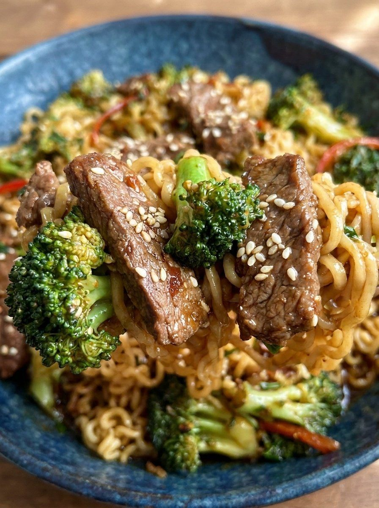

Beef and Broccoli Ramen Stir Fry

- Meal
- Dinner
- Serves
- 6 (scaled ×1.5 from the source's ~4 servings)
- Protein
- sirloin steak
- Cook
- stovetop, one skillet + noodle pot · 25 min active / 30 min total · easy
- Make-ahead / leftovers
- no / yes
- Mediterranean
- no
- WW tier
- moderate
- Status
- Trying out (probation)
Seared sirloin strips and steamed broccoli tossed with ramen noodles (seasoning packets discarded) in a honey-hoisin-soy sauce. Not Beef and Broccoli (Kristine's, served over brown rice) and not Chicken or Steak Ramen.
Ingredients
Scaled ×1.5 for 6. Source amounts in [brackets]. ≈ marks a rounding.
Sauce
- 6 tablespoons (¼ cup + 2 Tbsp) low-sodium soy sauce [¼ cup]
- 1½ tablespoons cornstarch [1 tablespoon]
- ½ cup beef broth [⅓ cup]
- 3 tablespoons honey [2 tablespoons]
- 3 tablespoons hoisin sauce [2 tablespoons]
- 1½ tablespoons rice vinegar [1 tablespoon]
- 1½ tablespoons sesame oil [1 tablespoon]
- 3 cloves garlic, minced [2 cloves]
- ¾ tablespoon (2¼ tsp) fresh ginger, grated [½ tablespoon]
- ≈1¼ teaspoons red pepper flakes (1.2 tsp exact, rounded) [⅘ teaspoon] — adults can add more at the table
Stir-fry
- 3 packages (3 ounces each) ramen noodles, seasoning packets discarded [2 packages (3 ounces each)]
- 1½ teaspoons sesame oil (for noodles) [1 teaspoon]
- 3 tablespoons extra-virgin olive oil, divided [2 tablespoons]
- 1½ pounds sirloin steak, trimmed and sliced into 1½-inch strips (about ¼-inch thick) [1 pound]
- ¾ teaspoon kosher salt [½ teaspoon]
- ¾ teaspoon ground black pepper [½ teaspoon]
- 4½ cups fresh broccoli florets [3 cups]
- ¾ cup water (for steaming broccoli) [½ cup]
- Sesame seeds, for garnish
Method
- Whisk the soy sauce and cornstarch until smooth. Add the broth, honey, hoisin, rice vinegar, sesame oil, garlic, ginger and red pepper flakes. Set aside.
- Boil the ramen 2–3 min (seasoning packets discarded). Drain, rinse with cold water, and toss with the sesame oil.
- Heat half the olive oil in a large nonstick skillet over medium-high. Season the steak with salt and pepper. Sear undisturbed ~3 min, then ~2 min more until cooked through but tender (at ×1.5, sear in two batches so it browns). Move to a plate and drain excess grease.
- Add the remaining olive oil and the broccoli. Pour in the water, cover, and steam ~2 min until bright green and crisp-tender.
- Return the beef and add the noodles. Re-stir the sauce, pour it in, and toss 1–2 min until the sauce thickens and everything is coated and hot.
- Garnish with sesame seeds and serve immediately.
Notes
- Servings: source makes about 4 (1 lb steak + two 3-oz ramen packs). Scaled ×1.5 for the household of 6; the only rounding is the red pepper flakes (1.2 tsp → ≈1¼ tsp). Use the largest skillet or a wok at this size.
- Starch: ramen is the dish's starch as written — not swapped for rice. (House brown-rice rule applies only when rice is the side.)
- a fish-free plate / hidden fish: no fish in the recipe, so no chicken swap. Check the soy sauce, hoisin and beef broth labels for fish sauce, Worcestershire or anchovy (some hoisin and broth/bouillon bases include them); pick another brand if listed.
- Red meat: sirloin as the main counts toward the ≤2 red/processed-meat cap.
- WW tier moderate: balanced — lean sirloin and lots of broccoli, but refined (pre-fried) instant ramen plus honey/hoisin sugar. Not fried, cream-based or cheesy; classed like the house's other beef stir-fries (Beef and Broccoli, Honey Garlic Glazed Beef) as moderate rather than heavy.
- Mediterranean ✗: olive oil ✓ and vegetables ✓, but red meat ✗ and refined ramen ✗ (2 of 4). No legumes.
- Nutrition: not given by the source; none listed here.
Source: Recipes by Clare, via X: https://x.com/recipesbyclare/status/2118376027953000744